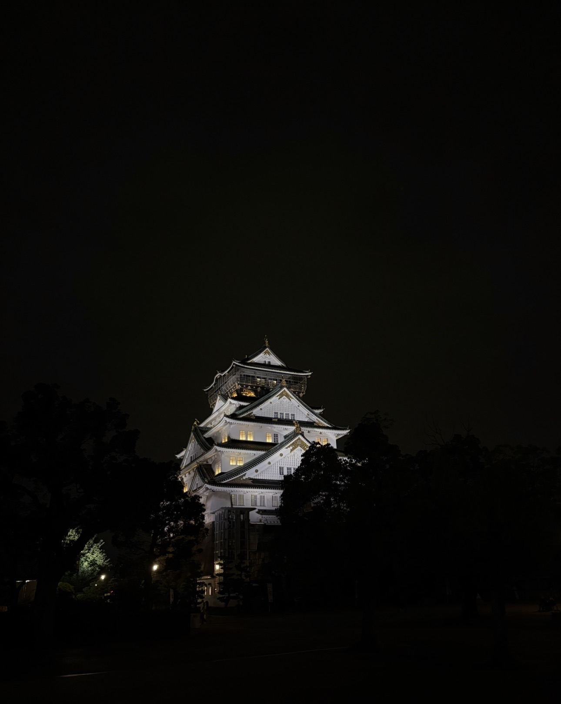

나의 여행 앨범
여행 중 콘서트에서 직접 녹음한 배경 음악입니다.
-

오사카성 (2026년) -

프랑스 (2020년) -

산티아고 순례길 (2020년)
나의 여행 브이로그
일본에서 관람한 야구 경기의 홈런 순간을 담은 영상입니다. 대사 없이 환경음만 있는 영상입니다.
여행하며 담은 사진과 음악, 그리고 영상을 한곳에 모았습니다.
여행 중 콘서트에서 직접 녹음한 배경 음악입니다.

일본에서 관람한 야구 경기의 홈런 순간을 담은 영상입니다. 대사 없이 환경음만 있는 영상입니다.